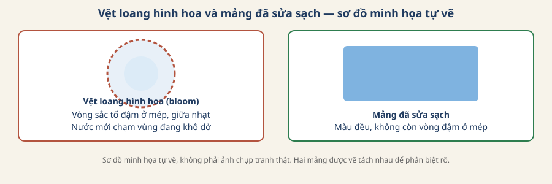

7 lỗi thường gặp khi mới vẽ màu nước và cách sửa
Tác giả: Ruler
Chuyên mục: Sửa lỗi và giữ tranh — Cập nhật: 23/11/2026
Người mới vẽ màu nước thường nghĩ lỗi là do mình không có năng khiếu. Thực ra, hầu hết lỗi đều có nguyên nhân rõ ràng: nước nhiều hay ít, giấy ướt hay khô, lớp dưới khô hay chưa khô, màu pha có quá nhiều màu hay không. Bài này liệt kê bảy lỗi hay gặp nhất, mỗi lỗi đều có ba phần: vì sao xảy ra, sửa thế nào khi màu còn ướt, sửa thế nào khi màu đã khô, và phòng tránh ra sao lần sau.
Bạn không cần đọc hết bảy lỗi một lúc. Bạn chỉ cần tìm đúng lỗi mình vừa gặp, đọc phần sửa của lỗi đó, rồi làm thử trên giấy nháp trước khi sửa trên tranh thật. Các kỹ thuật loang màu, chồng lớp và chừa trắng đã được hướng dẫn ở các bài trước, bài này chỉ dùng lại chúng để sửa lỗi, không dạy lại từ đầu.

Sơ đồ minh họa tự vẽ — không phải ảnh chụp tranh màu nước thật. Hai mảng được vẽ tách nhau trong hai khung riêng, có nhãn rõ, để phân biệt được ngay.
Lỗi 1: Màu bị đục, như nước rửa bát
Đây là lỗi hay gặp nhất. Bạn pha một màu đẹp trên đĩa, nhưng khi lên giấy, màu lại thành xám nâu đục, mất độ trong.
Nguyên nhân thường là bạn trộn quá nhiều màu với nhau, hoặc tô đi tô lại cùng một chỗ khi màu còn ướt, hoặc cọ còn dính màu cũ. ArtTools giải thích rằng màu đục thường đến từ việc trộn quá nhiều màu, làm việc quá tay trên vùng còn ướt, hoặc dùng cọ còn dính màu khác, và khi bạn cứ thêm sắc tố vào cùng một chỗ, các màu sẽ triệt tiêu lẫn nhau thành xám nâu. Watercolor Affair cũng liệt kê tránh màu đục là một trong những lỗi thường gặp, và khuyên hạn chế số màu trong mỗi lớp.
Cách sửa khi màu còn ướt là thấm nhẹ vùng màu đục bằng khăn giấy khô sạch, lấy bớt sắc tố ra, rồi để khô hẳn trước khi quyết định có tô lại hay không. Cách sửa khi màu đã khô là làm ướt nhẹ vùng đó bằng nước sạch, đợi một lúc cho sắc tố mềm ra, rồi thấm nhẹ bằng khăn giấy hoặc cọ sạch ẩm. ArtTools hướng dẫn đúng hai cách này: khi còn ẩm thì thấm bằng khăn giấy khô, khi đã khô thì làm ướt lại, đợi khoảng ba mươi giây, rồi lấy màu ra bằng khăn giấy hoặc cọ sạch ẩm.
Cách phòng tránh là giới hạn mỗi lớp màu chỉ dùng hai hoặc ba màu, rửa cọ sạch giữa các màu, và để mỗi lớp khô hẳn trước khi thêm lớp mới. Bạn cũng nên pha đủ màu ngay từ đầu, thay vì pha thêm giữa chừng rồi tô chồng lên vùng đang ướt.
Lỗi 2: Vệt loang hình hoa, còn gọi là bloom hay backrun
Vệt loang hình hoa là một vòng sắc tố đậm ở mép, giữa nhạt, trông như cánh hoa hay hình súp lơ. Nó xuất hiện khi một giọt nước hay màu ướt chạm vào vùng đang khô dở và đẩy sắc tố ra ngoài.
ArtTools mô tả vệt này là vòng sắc tố đậm lan ra với phần giữa nhạt, xảy ra khi nước hay màu ướt chạm vào vùng còn ẩm và đẩy sắc tố ra mép. Watercolor Affair cũng giải thích rằng vùng ẩm sẽ hút nước từ vùng ướt hơn bên cạnh, tạo ra vệt loang không mong muốn, và cách phòng là lấy bớt giọt nước thừa trước khi vệt kịp hình thành.
Cách sửa khi còn ướt là thấm nhẹ toàn bộ vùng đó bằng khăn giấy khô để hút bớt nước thừa trước khi vòng loang khô lại. Bạn cần làm nhanh, vì một khi vòng đã khô thì khó sửa hơn nhiều. Cách sửa khi đã khô là làm ướt nhẹ vùng vệt loang bằng cọ mềm, đợi một lúc cho sắc tố mềm ra, rồi thấm nhẹ bằng khăn giấy. Nếu vệt loang nhỏ và nằm ở vùng nền, bạn cũng có thể chấp nhận nó như một hiệu ứng vân, hoặc phủ một lớp loang mới lên trên sau khi khô hẳn.
Cách phòng tránh là làm ướt giấy đều trước khi vẽ, vẽ nhanh khi giấy còn ẩm đều, và không thêm nước vào vùng đang khô dở. Nếu bạn thấy một vùng đang khô không đều, hãy đợi nó khô hẳn rồi mới vẽ tiếp, đừng cố cứu bằng cách thêm nước vào giữa chừng.
Lỗi 3: Viền cứng không mong muốn
Viền cứng là đường đậm chạy quanh mép mảng màu, làm bức tranh mất độ mềm. Lỗi này hay xảy ra khi bạn vẽ một mảng màu rồi để mép khô trước khi tô tiếp, hoặc khi bạn dừng cọ giữa chừng và để lại một giọt màu ở mép.
Nguyên nhân là nước ở mép khô nhanh hơn ở giữa, sắc tố bị đẩy ra mép và đọng lại thành đường đậm. Bạn càng để mảng màu khô dở rồi mới tô tiếp, viền cứng càng rõ. Cách sửa khi còn ướt là dùng cọ sạch ẩm chạm nhẹ vào viền cứng và tán đều ra, hoặc dùng khăn giấy chạm nhẹ để lấy bớt sắc tố ở mép. Cách sửa khi đã khô là làm ướt nhẹ vùng viền, đợi sắc tố mềm ra, rồi dùng cọ sạch ẩm tán nhẹ, hoặc phủ một lớp màu nhạt lên trên để làm mềm viền.
Cách phòng tránh là tô mảng màu trong một lần, đi cọ liên tục từ đầu đến cuối, không dừng giữa chừng. Bạn nên pha đủ màu trước khi tô, để không phải dừng lại pha thêm khi mảng màu đang khô. Bạn cũng nên làm việc nhanh hơn khi trời nóng hoặc khi dùng giấy khô nhanh, vì giấy khô nhanh sẽ tạo viền cứng nhanh hơn.
Lỗi 4: Wash loang lổ, sọc vệt
Wash là lớp màu mỏng tô đều lên một diện tích lớn, thường dùng cho bầu trời hay mặt nước. Wash loang lổ là khi lớp màu không đều, chỗ đậm chỗ nhạt, có sọc vệt của cọ.
Nguyên nhân thường là bạn pha không đủ màu ngay từ đầu, cọ quá khô, hoặc tô không đều tay. Watercolor Affair, trong bài "9 Reasons Why Your Watercolor Washes Look Streaky", liệt kê các nguyên nhân khiến wash loang lổ: không pha đủ màu trước khi bắt đầu, cọ quá khô làm mất vệt nước ở mép nét tô, tô quá chậm để mép wash khô trước khi nét sau tới, và nét tô sau không chồng lên mép ướt của nét trước. Cách sửa khi còn ướt là làm ướt lại toàn bộ vùng wash và tô lại một lớp đều, hoặc dùng cọ sạch ẩm tán đều. Cách sửa khi đã khô là phủ một lớp wash mới mỏng và đều lên trên sau khi lớp cũ khô hẳn, để làm đều màu.
Cách phòng tránh là pha một vũng màu đủ lớn trên đĩa trước khi tô, thử màu trên giấy nháp để xem độ đậm, rồi tô nhanh và đều theo một hướng. Bạn đừng tô đi tô lại cùng một chỗ khi wash đang khô, vì mỗi lần tô lại sẽ tạo thêm một vệt. Bạn cũng nên nghiêng nhẹ tờ giấy để màu chảy đều, thay vì để màu đọng lại một chỗ.
Lỗi 5: Chồng lớp khi lớp dưới chưa khô
Chồng lớp, còn gọi là glazing, là tô một lớp màu trong mỏng lên trên một lớp màu đã khô hoàn toàn. Lỗi xảy ra khi bạn tô lớp mới khi lớp dưới còn ẩm, khiến hai lớp trộn vào nhau, tạo vệt loang và màu đục.
Watercolor Affair nhấn mạnh rằng chồng lớp là kỹ thuật khô: mỗi lớp màu tiếp theo phải được tô khi lớp wash bên dưới đã khô hoàn toàn, nếu không bạn sẽ tạo ra vệt loang hay vết ố không mong muốn. Quy tắc này là phải khô hẳn, không phải chỉ khô bề mặt (Watercolor Affair, "Watercolor Transparency": "Always let your first layer dry completely before adding another").
Cách sửa khi bạn vừa lỡ tô lớp mới lên lớp còn ẩm là dừng tay ngay, thấm nhẹ vùng đó bằng khăn giấy khô, rồi để khô hẳn và xem lại. Bạn đừng cố tô thêm để cứu, vì càng tô càng đục. Cách sửa khi đã khô là chấp nhận vùng đó đậm hơn dự định, hoặc lấy bớt màu ra bằng cách làm ướt nhẹ và thấm, rồi tô lại lớp mới sau khi khô hẳn.
Cách phòng tránh là kiểm tra độ khô bằng cách sờ mặt sau tờ giấy: nếu mặt sau còn mát và hơi ẩm thì lớp màu chưa khô hẳn, bạn nên đợi thêm. Bạn cũng có thể đợi đến khi bề mặt hết bóng nước hoàn toàn rồi mới tô lớp tiếp theo. Nếu bạn vội, bạn có thể dùng máy sấy ở mức gió nhẹ và nhiệt thấp, nhưng hãy để giấy nguội hẳn trước khi tô tiếp (Watercolor Affair, "20 Ways to Fix Watercolor Mistakes": "you can always use a hair dryer… So long as you keep it on a low heat setting").
Lỗi 6: Mất vùng trắng, tranh tối hơn dự định
Trong màu nước, vùng trắng là giấy trắng được giữ lại, không phải màu trắng tô thêm. Lỗi mất vùng trắng xảy ra khi bạn tô kín cả tờ giấy rồi mới nhớ tới vùng sáng, hoặc khi bạn pha màu quá đậm ngay từ đầu.
Cách sửa khi màu còn ướt là dùng khăn giấy sạch hoặc cọ sạch ẩm chạm nhẹ vào vùng cần sáng để lấy bớt màu ra. Watercolor Affair liệt kê lấy màu ra là một trong những cách sửa lỗi thường gặp, và khuyên dùng cọ sạch ẩm hoặc khăn giấy để tạo điểm sáng. Cách sửa khi màu đã khô là làm ướt nhẹ vùng cần sáng, đợi sắc tố mềm ra, rồi thấm bằng khăn giấy. Cách này chỉ lấy được một phần màu, nhất là với màu bám mạnh, nên vùng trắng sau khi sửa sẽ không trắng bằng giấy chưa tô.
Cách phòng tránh là quyết định vùng trắng trước khi tô màu, như đã hướng dẫn ở bức trăng đêm trong bài năm bức vẽ nhỏ. Bạn nhìn tờ giấy trắng và đánh dấu nhẹ bằng bút chì vùng nào cần giữ trắng, rồi tô màu tránh vùng đó. Bạn cũng nên pha màu nhạt hơn bạn nghĩ một chút ở lớp đầu, vì bạn luôn có thể tô đậm thêm sau khi khô, nhưng rất khó làm nhạt lại một vùng đã tô đậm.
Lỗi 7: Giấy cong, nhăn và bị xước do tô quá tay
Giấy cong và nhăn thường do giấy quá mỏng hoặc do bạn dùng quá nhiều nước trên một tờ giấy không được dán cố định. Giấy bị xước và nổi lông thường do bạn tô đi tô lại cùng một chỗ khi giấy còn ướt, làm bề mặt giấy bị bào mòn.
Cách phòng tránh giấy cong là dùng giấy 300 gsm như đã khuyên ở bài bộ đồ tối thiểu, và dán bốn cạnh giấy lên bìa cứng bằng băng dính giấy trước khi vẽ. Block dán bốn cạnh cũng giúp giấy phẳng hơn. Cách phòng tránh giấy xước là chạm cọ nhẹ, mỗi lần chạm chỉ thêm một chút màu, không chà cọ mạnh lên giấy ướt. Online Art Lessons cho biết tô quá tay trên giấy ướt là một trong những cách nhanh nhất làm hỏng một mảng màu đẹp, vì vùng đó sẽ trông bị chà xát, xỉn và xám hơn vùng xung quanh, dù màu gốc ban đầu rất tươi.
Cách sửa khi giấy đã cong là để tranh khô hẳn, rồi giữ tranh phẳng trong sổ hoặc kẹp giữa hai tấm bìa cứng. Cách này chỉ giúp giữ phẳng, giấy đã cong nặng thường khó phẳng lại hoàn toàn. Cách sửa khi giấy đã xước thì khó hơn: bạn không thể làm bề mặt giấy mịn lại được, bạn chỉ có thể chấp nhận vết xước như một phần của bức tranh, hoặc vẽ lại trên tờ giấy mới. Vì vậy, với lỗi này, phòng tránh quan trọng hơn sửa chữa rất nhiều.
Giữ tranh sau khi vẽ xong: tránh phai và ẩm
Sau khi sửa xong lỗi, bạn cần giữ tranh đúng cách để màu không phai nhanh. Nguyên tắc quan trọng nhất khi đóng khung tranh màu nước là mặt tranh không được chạm vào kính. Russell Collection cho biết quy tắc này áp dụng cho mọi khung tranh màu nước, vì tiếp xúc trực tiếp sẽ gây đọng hơi nước, nấm mốc và hư hại bề mặt, và tấm lót khung tạo khoảng cách giữa kính và mặt tranh. Bruce Black cũng viết rằng kính không bao giờ được chạm vào tác phẩm, vì thay đổi độ ẩm có thể gây đọng hơi nước, dính vào màu và làm hỏng tranh.
Bạn nên dùng tấm lót không axit, còn gọi là acid-free hay museum board, để tránh tấm lót thường làm ố vàng mép tranh theo thời gian. Bạn nên dùng kính lọc tia cực tím, vì tia cực tím là kẻ thù của sắc tố màu nước, làm màu phai dần. Bạn nên treo tranh ở tường không có nắng chiếu trực tiếp, và dùng đèn LED thay vì đèn tỏa nhiều nhiệt nếu muốn chiếu sáng tranh. Bạn đừng treo tranh màu nước trong phòng tắm hay nơi ẩm ướt, vì giấy rất nhạy với độ ẩm.
Bạn không cần đóng khung ngay sau khi vẽ xong. Bạn hãy để tranh khô hẳn qua đêm, giữ tranh phẳng trong một cuốn sổ hay một túi đựng tranh, tránh để tranh chồng lên nhau khi màu chưa khô hẳn. Khi nào bạn muốn treo tranh lên tường, hãy mang tranh ra tiệm đóng khung và hỏi rõ về tấm lót không axit và kính lọc tia cực tím, thay vì chỉ chọn khung theo màu sắc.
Kết luận
Bảy lỗi trong bài này gồm màu đục, vệt loang hình hoa, viền cứng, wash loang lổ, chồng lớp khi lớp dưới chưa khô, mất vùng trắng và giấy cong hay xước. Mỗi lỗi đều có nguyên nhân rõ ràng và cách sửa riêng khi còn ướt và khi đã khô, nhưng điểm chung của cả bảy lỗi là phòng tránh dễ hơn sửa chữa rất nhiều: pha đủ màu, làm ướt giấy đều, chạm cọ nhẹ, chờ khô hẳn giữa các lớp, và giữ vùng trắng ngay từ đầu.
Nếu bạn vừa gặp một lỗi trong bảy lỗi trên, đừng vội bỏ bức tranh đi. Hãy thử sửa theo hướng dẫn trong bài, trên giấy nháp trước, rồi mới sửa trên tranh thật. Vẽ lại một bức đã sửa lỗi thường dạy bạn nhiều hơn là vẽ một bức mới mà không biết mình sai ở đâu.
Nguồn tham khảo
- ArtTools, "Watercolor Fixes: How to Fix Common Mistakes" — màu đục do trộn quá nhiều màu, vệt loang do nước chạm vùng đang khô dở, cách thấm khi còn ướt và làm ướt lại khi đã khô (truy cập 23/11/2026): https://www.arttools.com/watercolor-fixes-how-to-fix-common-mistakes/
- Watercolor Affair, "20 Ways to Fix Watercolor Mistakes" — vệt loang do vùng ẩm hút nước, chồng lớp khi lớp dưới chưa khô, lấy màu ra để tạo điểm sáng (truy cập 23/11/2026): https://www.watercoloraffair.com/20-ways-to-fix-watercolor-mistakes/
- Russell Collection, "Framing Watercolor Paintings: Tips for Best Results" — tranh không được chạm kính, tấm lót phải không axit, kính lọc tia cực tím; chỉ dùng cho phần giữ tranh / đóng khung, không dùng cho kỹ thuật chồng lớp (truy cập 23/11/2026): https://russell-collection.com/framing-watercolor-paintings/
- Watercolor Affair, "9 Reasons Why Your Watercolor Washes Look Streaky" — wash loang lổ do không pha đủ màu, cọ khô làm mất vệt nước ở mép, tô quá chậm để mép khô, nét sau không chồng lên mép ướt của nét trước (truy cập 23/11/2026, W-14 mở trực tiếp): https://www.watercoloraffair.com/9-reasons-why-your-watercolor-washes-look-streaky/
- Online Art Lessons, "10 Common Watercolor Mistakes" — tô quá tay trên giấy ướt là một trong những cách nhanh nhất làm hỏng một mảng màu đẹp, bề mặt bị chà xát, xỉn và xám hơn vùng xung quanh (truy cập 23/11/2026, đã xác minh qua kết quả tìm kiếm): https://onlineartlessons.com/tutorial/10-common-watercolor-mistakes-and-how-to-fix-them/
- Bruce Black, "The Collector's Guide to Watercolor" — kính không bao giờ được chạm vào tác phẩm, thay đổi độ ẩm gây đọng hơi nước, dính vào màu (truy cập 23/11/2026, đã xác minh qua kết quả tìm kiếm): https://www.bruceblackart.com/studio-journal/the-collectors-guide-to-watercolor-expert-framing-lighting-and-care
- Watercolor Affair, "Watercolor Transparency: A Beginner's Guide" — ánh sáng đi qua lớp màu trong, phản chiếu lên giấy trắng; chồng lớp khi lớp dưới đã khô hẳn (truy cập 23/11/2026, Q-14 đã mở trực tiếp và xác minh): https://www.watercoloraffair.com/watercolor-transparency/